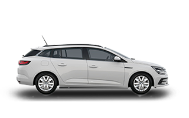

az elegáns és variálható, mostantól tölthető hibrid kombi
kezdő listaár 15 799 000 Ft|
töltsön könnyedén és biztonságosan otthonában is az E.ON, Z.E. Ready töltőivel!
A Renault és az E.ON együttműködésének köszönhetően nem csak az autóvásárlás folyamata, de a megfelelő otthoni töltési környezet kialakítása is kényelmes és biztonságos. Renault ügyfélként kérjen kizárólagos ajánlatot az E.ON-tól készülékre (11 kW-os Vestel EVC04-E11-W-S, 22 kW-os Vestel EVC04-E22-WLDM-C) és telepítésükre, majd vegye át kiválasztott Renault Márkakereskedésétől közvetlenül! a Megane Grandtour hibrid verzióban is elérhető!Az E-Tech Plug-in Hybrid verzió a Megane Grandtour 2 motorjának legjobb elemeit ötvözve biztosít egyedi vezetési élményt. Hétköznap közlekedjen teljesen elektromos módban, hétvégén pedig váltson hibrid módba és felejtse el a hatótáv jelentette korlátokat!Az elektromos és a benzinmotor ötvözete…a hibrid verzió sokoldalúsága! |
 |
A MEGANE GRANDTOUR ERŐSSÉGEI, HIBRID VERZIÓBAN!
Érzéki vonalvezetés, kényelmes belső tér, variálható csomagtér... A Megane Grandtour E-Tech Plug-in hybrid a Megane Grandtour legjobb elemeit a hibrid előnyeivel ötvözi.
|
a sokoldalú kombi
A hétköznapok során közlekedjen üzemanyag nélkül - a Megane Grandtour E-Tech Plug-in Hybrid akár 50 km-es elektromos hatótávra* képes városi környezetben. Elérkezett a nyaralás ideje? Utazzon szabadon, nem lesz gondja a hatótávolsággal, hiszen bármikor válthat a benzines és az elektromos mód között (akár 50 km** elektromos hatótáv vegyes fogyasztás mellett). |
páratlan vezetési élmény
Könnyed és csendes vezetés, páratlan rugalmasság és dinamikus gyorsulás elinduláskor... A Megane Grandtour E-Tech Plug-in Hybrid az innovatív, többmódozatú sebességváltó mellett 1,6 literes, újgenerációs, 160 lóerős motorral rendelkezik, így biztosítva a páratlan vezetési élményt. |
kézben tartott fogyasztás
Az E-Tech tölthető hibrid módnak köszönhetően az autó indulása minden esetben elektromosan történik, így a rövidebb és a hosszabb utakon is csökkentheti az üzemanyag-fogyasztását, illetve a CO2-kibocsátását (akár 70%-kal**). A még gazdaságosabb vezetés érdekében válassza a sebességváltó "B" módját, és nyerjen vissza még több energiát. |
Forras:Renault.hu